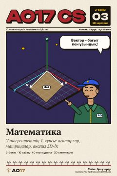

AO17 CS курсы / 2-бөлім: 3D зертхана / Математика

Математика · 9-сабақ · ≈25 мин · 2 қадам · 4 сұрақ
Шеңбер және эллипс
Эллипс: екі фокусқа дейінгі қашықтықтар қосындысы тұрақты нүктелер. Бау мен екі қазықпен сызылады, ал эксцентриситет оның қаншалық созылғанын айтады.
Кино-түсіндіру: сабақтың өзегі бір минуттық мультфильмде. Мәтіні төменде.
Фильмнің мәтіні (сабақтың қадамдарынан құрастырылған)
- Сұрақ. Екі қазық, оларға байланған бау. Қарындаш бауды керіп, қисық сызады. Қарындаш жүрген сайын d₁ + d₂ қалай өзгереді?
- Бейне. Эллипс дегеніміз екі нүктеге (фокустарға) дейінгі қашықтықтарының қосындысы тұрақты болатын нүктелер жиыны: Мұнда a: үлкен жарты ось, центрден ең алыс нүктеге дейінгі қашықтық.
- Болжа. Екі қазық, оларға байланған бау. Қарындаш бауды керіп, қисық сызады. Қарындаш жүрген сайын d₁ + d₂ қалай өзгереді? Жауап: Өзгермейді. Бау созылмайды: қарындаштан екі қазыққа дейінгі екі бөлігінің қосындысы әрқашан бау ұзындығына тең. Эллипстің анықтамасы дәл осы.
- Көр. 1-қадам, «Бау мен екі қазық». Эллипс дегеніміз екі нүктеге (фокустарға) дейінгі қашықтықтарының қосындысы тұрақты болатын нүктелер жиыны: Мұнда a: үлкен жарты ось, центрден ең алыс нүктеге дейінгі қашықтық.
- Көр. 2-қадам, «Эксцентриситет: қаншалық созылған». Эксцентриситет e эллипстің қаншалық созылғанын бір санмен айтады: e = 0: шеңбер (фокустар центрде); e кіші: шеңберге ұқсас, дөңгелек; e 1-ге жақын: созылған, жалпақ.
- Көр. Нақты әлемде: Планеталар Күнді эллипс бойымен айналады, Күн бір фокуста тұрады (Кеплердің бірінші заңы). Жер орбитасының e ≈ 0,017: ол шеңберге өте жақын.
- Түйін. Эллипс: екі фокусқа дейінгі қашықтықтар қосындысы тұрақты нүктелер. Бау мен екі қазықпен сызылады, ал эксцентриситет оның қаншалық созылғанын айтады.
- Түйін. Жиі қате: x²/25 + y²/9 = 1 эллипсінің эксцентриситеті қандай? Жауап: «0,6». Дұрысы: «0,8». a = 5, b = 3, c = √(25 − 9) = 4, e = c/a = 4/5 = 0,8. 0,6 = b/a, ал 1,25 = a/c: бұлар бөлшекті шатастырғанда шығады.
1Бау мен екі қазық
Комикс · Нұрай, Мустафа және Бота
Бағбанның бауы
Көктем. Нұрай саябақта гүлзар жасауға көмектесіп жүр.
Нұрай: Бағбан ата шеңбер емес, сопақ гүлзар қалайды. Циркуль жоқ, оны қалай дәл сызамыз?
Бота: Екі қазық қақ, оларға бір бау байла. Бауды таяқпен керіп, айнала жүр.
Мустафа: Бір жаққа жақындасам, бір қазыққа жақын, екіншісінен алыс боламын ғой?
Бота: Иә, бірақ қосындысы өзгермейді: бау созылмайды. Бұл эллипстің анықтамасы.
Нұрай: Ал қазықтарды бір жерге қақсам, шеңбер шығады екен!
Идея
Эллипс дегеніміз екі нүктеге (фокустарға) дейінгі қашықтықтарының қосындысы тұрақты болатын нүктелер жиыны:
d₁ + d₂ = 2aМұнда a: үлкен жарты ось, центрден ең алыс нүктеге дейінгі қашықтық. Фокустар центрден c қашықтықта, (−c, 0) және (c, 0) нүктелерінде.
Түйсік: бағбан әдісі
Бағбан сопақ гүлзар сызғысы келеді. Жерге екі қазық қағады, оларға ұзын бау байлайды, бауды таяқпен керіп, айнала жүреді. Таяқтың ізі: эллипс. Бау созылмайтындықтан, d₁ + d₂ әрдайым бау ұзындығына тең.
Есептеп көрейік
Ең жоғарғы нүктеде екі қашықтық тең, әрқайсысы a. Центрден оның биіктігі кіші жарты ось b. Центр, фокус және сол нүкте тік бұрышты үшбұрыш құрайды, сондықтан Пифагор бойынша:
b² = a² − c²
x²/a² + y²/b² = 1a = 5, c = 3 болса: b² = 25 − 9 = 16, b = 4.
Шеңбер: ерекше жағдай
c = 0 болса, екі фокус центрде бірігеді: d₁ = d₂ = a, ал b = a. Барлық нүкте центрден бірдей қашықтықта: бұл шеңбер.
Енді сен
P нүктесін эллипс бойымен жүргізіп, d₁ мен d₂ санағыштарына қара: біреуі өссе, екіншісі сонша кемиді. Сосын c-ны нөлге түсір.
3D симуляцияда орында
- a = 5, c = 3. P нүктесін эллипс бойымен кемінде үш түрлі жерге апар да, d₁ + d₂-ні бақыла
- Фокустарды центрге жина (c = 0): эллипс шеңберге айналсын
Алдымен болжа
Екі қазық, оларға байланған бау. Қарындаш бауды керіп, қисық сызады. Қарындаш жүрген сайын d₁ + d₂ қалай өзгереді?
Жауабы мен түсіндірмесі
Дұрыс жауап: Өзгермейді
Бау созылмайды: қарындаштан екі қазыққа дейінгі екі бөлігінің қосындысы әрқашан бау ұзындығына тең. Эллипстің анықтамасы дәл осы.
Шешілген мысал
Эллипстің фокустары (±3, 0), үлкен жарты осі a = 5. Оның теңдеуін жаз.
d₁ + d₂ = 2a = 10Анықтама: кез келген нүктеден фокустарға дейінгі қашықтықтар қосындысы 2a.c = 3Фокустар центрден c қашықтықта жатыр.b² = a² − c² = 25 − 9 = 16Ең жоғарғы нүкте, центр және фокус тік бұрышты үшбұрыш құрайды.x²/25 + y²/16 = 1Бөлгіштерде a² мен b² тұрады, қосу таңбасы эллипстің белгісі.
Өзіңді тексер
Эллипстің фокустары (±4, 0), үлкен жарты осі a = 5. Кіші жарты ось b неге тең?
Жауабы мен түсіндірмесі
Дұрыс жауап: 3
b² = a² − c² = 25 − 16 = 9, демек b = 3. Плюс таңба (√41) гипербола формуласынан шатасқанда шығады.
Эллипстің кез келген нүктесінен екі фокусқа дейінгі қашықтықтар қосындысы неге тең?
Жауабы мен түсіндірмесі
Дұрыс жауап: 2a
Үлкен осьтің ұшында бұл анық көрінеді: (a + c) + (a − c) = 2a. Ал анықтама бойынша қосынды барлық нүктеде бірдей.
2Эксцентриситет: қаншалық созылған
Идея
Эксцентриситет e эллипстің қаншалық созылғанын бір санмен айтады:
e = c / a, 0 ≤ e < 1- e = 0: шеңбер (фокустар центрде);
- e кіші: шеңберге ұқсас, дөңгелек;
- e 1-ге жақын: созылған, жалпақ.
Түйсік
a мөлшерін, ал e пішінін береді. Екі эллипстің a-сы бірдей, бірақ e-лері әртүрлі болса, бірі дөңгелек, бірі сопақ. Ал e бірдей болса, олар бір пішін, тек масштабы бөлек.
Есептеп көрейік
e = 0,8 және a = 5 болса: c = e·a = 4, b² = 25 − 16 = 9, b = 3. Теңдеуі x²/25 + y²/9 = 1.
Кері есеп: a = 6,5, b = 6 берілсе, c² = a² − b² = 42,25 − 36 = 6,25, c = 2,5, e = 2,5 / 6,5 ≈ 0,38.
Нақты әлемде
Планеталар Күнді эллипс бойымен айналады, Күн бір фокуста тұрады (Кеплердің бірінші заңы). Жер орбитасының e ≈ 0,017: ол шеңберге өте жақын. Галлей кометасында e ≈ 0,97: ұзын, жалпақ орбита, сондықтан ол Күнге 76 жылда бір рет келеді.
Енді сен
Алдымен қағазда есепте, сосын сырғытпалармен құр: e = 0,8 болатын эллипс және a = 6,5, b = 6 эллипсі.
3D симуляцияда орында
- Эксцентриситеті e = 0,8 болатын эллипс құр
- a = 6,5 және кіші жарты осі b = 6 болатын эллипс құр: алдымен c-ны есепте
Алдымен болжа
a = 5 тұрақты. c-ны 5-ке жақындатсақ (e = c/a → 1), эллипс қандай болады?
Жауабы мен түсіндірмесі
Дұрыс жауап: Жалпақ, кесіндіге ұқсайды
b² = a² − c² нөлге жақындайды: биіктік жойылып, эллипс фокустар арасындағы кесіндіге жапсырылады.
Қатені тап
a = 13, b = 5 эллипсінің фокустары мен эксцентриситетін тап.
c² = a² − b²c² = 169 − 25 = 144c = 12, фокустар (±12, 0)e = a / c = 13/12
Жауабы
4-жол қате. Эксцентриситет e = c / a, ол эллипсте әрқашан 1-ден кіші. 13/12 > 1 шықса, бөлшек төңкерілген.
Дұрысы: e = c / a = 12/13
Екі эллипс, бір a
A эллипсі
a = 5, c = 1b = √24 ≈ 4,9e = 0,2
Дөңгелек, шеңберге ұқсас
B эллипсі
a = 5, c = 4,5b = √4,75 ≈ 2,2e = 0,9
Жалпақ, созылған
Пішінді не өзгертті?
Жауабы мен түсіндірмесі
Дұрыс жауап: e = c/a қатынасы
Екеуінде де a = 5, сондықтан d₁ + d₂ = 10. Айырмасы тек фокустардың центрден қашықтығында: e 0-ге жақын болса дөңгелек, 1-ге жақын болса созылған.
Өз сөзіңмен түсіндір
Эллипсті неге бау мен екі қазықпен сызуға болады? b неге √(a² − c²)? Ал e оның пішінін қалай басқарады?
Жақсы түсіндірмеде болатын ойлар
- d₁ + d₂ = 2a тұрақты (бау ұзындығы)
- Пифагор: b² = a² − c²
- e = c/a: 0 шеңбер, 1-ге жақын созылған
Өзіңді тексер
x²/25 + y²/9 = 1 эллипсінің эксцентриситеті қандай?
Жауабы мен түсіндірмесі
Дұрыс жауап: 0,8
a = 5, b = 3, c = √(25 − 9) = 4, e = c/a = 4/5 = 0,8. 0,6 = b/a, ал 1,25 = a/c: бұлар бөлшекті шатастырғанда шығады.
Шеңбердің эксцентриситеті қандай?
Жауабы мен түсіндірмесі
Дұрыс жауап: 0
Шеңберде c = 0: екі фокус центрде бірігеді, сондықтан e = 0/a = 0.
Шешім фильмі · практикадан кейін
Фокустардан теңдеуге
- Түсіну
- Жоспар
- Шешу
- Тексеру
Өзің шығарып болдың ба? Енді шешімді фильм сияқты көр: тақтаға жол-жолымен жазылады, әр қадамның себебі астында айтылады.
Фильмнің мәтіні (6 кадр)
- Түсіну. Берілгені: екі фокус және қашықтықтар қосындысы 10. Табу керек: эллипстің теңдеуі мен эксцентриситеті.
Фокустар (±4, 0), d₁ + d₂ = 10 - Жоспар. Жоспар: қосындыдан a-ны, фокустан c-ны аламыз, b-ны Пифагор табады.
2a = 10, c = 4, b² = a² − c² - Шешу. Қосынды 2a-ға тең, демек a = 5. Нүкте эллипс бойымен жүріп келеді.
a = 5 - Шешу. Пифагор: b² = 9, b = 3. Сахнада нүкте ең жоғарғы орынға келді: биіктігі дәл 3.
b² = 25 − 16 = 9 ⇒ b = 3 - Шешу. Теңдеу дайын, эксцентриситет 0,8: эллипс едәуір созылған.
x²/25 + y²/9 = 1, e = 4/5 = 0,8 - Тексеру. Тексеру: ең жоғарғы нүктеден әр фокусқа дейін 5, қосындысы 10. Анықтама орындалды.
(0, 3): d₁ = d₂ = √(16 + 9) = 5, 5 + 5 = 10 ✓
Сабақ AO17 командасының INSIDE TECH 3D платформасынан алынған: дәріс, тест және 3D симуляция - бір сабақтың бөліктері. Симуляция осы сайттың ішінде ашылады, прогресі «Менің шаңырағым» бетіне қосылады.